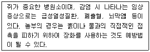
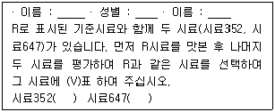
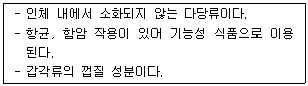
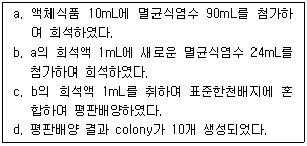

식품기사 (2018-08-19 기출문제)
1과목: 식품위생학
1. 바이러스성 식중독에 대한 설명이 틀린 것은?
- 항생제로 치료되지 않는다.
- 자체 증식이 가능하다.
- 미량으로도 발병한다.
- 면역이 되지 않아 재발이 가능하다.
(정답률: 70%)

2. 아래의 설명과 관계 깊은 인수공통 감염병은?

- 리스테리아증
- 렙토스피라증
- 돈단독
- 결핵
(정답률: 84%)
3. 식품 공장의 위생관리 방법으로 적합하지 않은 것은?
- 환기시설은 악취, 유해가스, 매연 등을 배출하는데 충분한 용량으로 설치한다.
- 조리기구나 용기는 용도별로 구분하고 수시로 세척하여 사용한다.
- 내벽은 어두운 색으로 도색하여 오염 물질이 쉽게 드러나지 않도록 한다.
- 폐기물·폐수 처리시설은 작업장과 격리된 장소에 설치·운영한다.
(정답률: 92%)
4. 과일·채소류의 표면에 피막을 형성하여 신선도를 유지시키는 피막제로 사용되지 않는 것은?
- 과산화벤조일
- 초산비닐수지
- 폴리비닐피로돈
- 몰포린지방산염
(정답률: 53%)
5. 식품용 기구, 용기 또는 포장과 위생상 문제가 되는 성분의 연결이 틀린 것은?
- 종이제품 - 형광염료
- 법랑피복제폼 - 납
- 페놀수지제품 - 페놀
- PVC 제품 – 포르말린
(정답률: 77%)
6. 유전자 변형 식품의 안전성에 대한 평가 시 평가항목이 아닌 것은?
- 항생제 내성
- 독성
- 알레르기성
- 미생물의 오염 수준
(정답률: 84%)
7. 식품첨가물을 식품에 균일하게 혼합시키기 위해 사용되는 용제(Solvent)는?
- toluene
- ethylacetate
- isopropanol
- glycerine
(정답률: 64%)
8. 장티푸스에 대한 설명으로 틀린 것은?
- 원인균은 그람음성균으로 운동성이 있다.
- 주요 증상은 발열이다.
- 파라티푸스의 경우보다 병독증세가 강하다.
- 장티푸스 환자의 소변으로 균이 배출되지 않는다.
(정답률: 83%)
9. 다음 중 사용이 허용되어 있는 착색료가 아닌 것은?
- 삼이산화철
- 아질산나트륨
- 수용성 안나토
- 동클로로필린 나트륨
(정답률: 55%)
10. 이물검사법에 대한 설명이 틀린 것은?
- 체분별법 : 검체가 미세한 분말일 때 적용한다.
- 침감법 : 쥐똥, 토사 등의 비교적 무거운 이물의 검사에 적용한다.
- 원심분리법 : 검체가 액체일 때 또는 용액으로 할 수 있을 때 적용한다.
- 와일드만 플라스크법 : 곤충 및 동물의 털과 같이 물에 잘 젖지 아니하는 가벼운 이물검출에 적용한다.
(정답률: 54%)
11. 식품을 저장할 때 사용되는 식염의 작용 기작 중 미생물에 의한 부패를 방지하는 가장 큰 이유는?
- 염소이온에 의한 살균작용
- 식품의 탈수작용
- 식품용액 중 산소 용해도의 감소
- 유해세균의 원형질 분리
(정답률: 76%)
12. 보존료를 사용하는 주요 목적으로 거리가 먼 것은?
- 식품의 부패를 방지하여 선도를 유지한다.
- 부패 미생물에 대한 정균작용으로 보존기간을 연장시켜 준다.
- 식품 내의 효소의 작용을 증진시켜 품질을 개선한다.
- 식품의 유통단계에서 안전성을 확보하기 위하여 사용한다.
(정답률: 85%)
13. 미생물에 의한 단백질 변질 시 생성되는 물질이 아닌 것은?
- 암모니아
- 아민
- 페놀
- 젖산
(정답률: 72%)
14. 인수공통감염병을 일으키는 병명과 병원균이 연결이 틀린 것은?
- 결핵 : Mycobacterium tuberculosis
- 파상열 : Brcella melitensis
- 야토병 : Pasteurella tularensis
- 광우병 : Listeria monocytogenes
(정답률: 80%)
15. 먹는물 관리법의 용어 정의가 틀린 것은?
- “수처리제”란 자연 상태의 물을 정수 또는 소독하거나 먹는물 공급시설의 산화방지 등을 위하여 첨가하는 제제를 말한다.
- “먹는물”이란 암반대수층 안의 지하수 또는 용천수 등 수질의 안전성을 계속 유지할 수 있는 자연 상태의 깨끗한 물을 먹는 용도로 사용하는 모든 원수를 말한다.
- “먹는샘물”이란 샘물을 먹기에 적합하도록 물리적으로 처리하는 등의 방법으로 제조한 물을 말한다.
- “먹는염지하수”란 염지하수를 먹기에 적합하도록 물리적으로 처리하는 등의 방법으로 제조한 물을 말한다.
(정답률: 74%)
16. 통조림 변패 중 Flat sour에 대한 설명으로 틀린 것은?
- 통의 외관은 정상이나 내용물이 산성이다.
- Acetobacter 속이 원인균이다.
- 유포자 호열성균에 의한 것이다.
- 가열이 불충분한 통조림에서 발생하기 쉽다.
(정답률: 59%)
17. 제1군 감염병이 아닌 것은?(관련 규정 개정전 문제로 여기서는 기존 정답인 1번을 누르면 정답 처리됩니다. 자세한 내용은 해설을 참고하세요.)
- 디프테리아
- 세균성이질
- 콜레라
- 장티푸스
(정답률: 78%)
18. 포르말린이 용출될 우려가 없는 합성수지는?
- 멜라민수지
- 염화비닐수지
- 요소수지
- 페놀수지
(정답률: 56%)
19. 메틸 수은으로 오염된 어패류를 섭취하여 수은에 의한 축적성 중독을 일으키는 공해병은?
- PCB 중독
- 이타이 이타이병
- 미나마타병
- 열중증
(정답률: 84%)
20. 황색포도상구균에 의해 발생하는 식중독의 원인 물질은?
- 프토마인(ptomanie)
- 테트로도톡신(tetrodotoxin)
- 에르고톡신(ergotoxin)
- 엔테로톡신(enterotoxin)
(정답률: 86%)
2과목: 식품화학
21. 단백질을 구성하는 아미노산은?
- Ornitine
- DOPA(dihydroxyphenyl alanine)
- Alline
- proline
(정답률: 67%)
22. 증류수에 녹인 비타민 C를 정량하기 위해 분광광도계(spectrophotometer)를 사용하였다. 분광광도계에서 나온 시료의 흡광도 결과와 비타민 C의 관계를 구하기 위하여 이용해야 하는 것은?
- 람베르트-베르 법칙(Lambert-Beer’s law)
- 페히니 공식(Fechner’s law)
- 웨버의 법칙(Weber’s law)
- 미켈리스-멘텐식(Michaelis-Menten’s equation)
(정답률: 74%)
23. 식품을 씹는 동안 식품 성분의 여러 인자들이 감각을 다르게 하여 식품 전체의 조직감을 짐작하게 한다. 이런 조직감에 영향을 미치는 인자가 아닌 것은?
- 식품 입자의 모양
- 식품 입자의 크기
- 식품표면의 거친 정도(roughness)
- 식품 입자의 표면 장력
(정답률: 80%)
24. 효소반응을 위해 buffer를 제조하고자 한다. 최종 buffer에는 A, B, C 용액 성분이 각각 0.1mM, 0.⑤mM, 0.5mM 함유되어 있다. A, B, C 용액이 각각 1.0M 있다면 buffer 1L 제조 시 A, B, C 용액과 물을 얼마나 준비해야 하는가?(오류 신고가 접수된 문제입니다. 반드시 정답과 해설을 확인하시기 바랍니다.)
- A 용액 : 0.1L, B 용액 : 0.2L, C 용액 : 0.45L, 물 : 0.35L
- A 용액 : 0.1L, B 용액 : 0.⑤L, C 용액 : 0.5L, 물 : 0.35L
- A 용액 : 0.2L, B 용액 : 0.1L, C 용액 : 0.5L, 물 : 0.2L
- A 용액 : 0.2L, B 용액 : 0.4L, C 용액 : 0.1L, 물 : 0.3L
(정답률: 75%)
25. 아래의 질문지는 어떤 관능검사 방법에 해당하는가?

- 단순차이 검사
- 일-이점 검사
- 삼점검사
- 이점비교검사
(정답률: 79%)
26. 다음 중 면실유가 함유된 천연 항산화제는? (문제 오류로 실제 시험에서는 2,3번이 정답처리 되었습니다. 여기서는 2번을 누르면 정답 처리 됩니다.)
- 세사몰(seeamol)
- 고시폴(gossypol)
- 토코페롤(tocopherol)
- 향신료(spice)
(정답률: 86%)
27. 식품과 함유된 주단백질의 연결이 틀린 것은?
- 쌀 - oryzenin
- 고구마 - jalapin
- 감자 - tuberin
- 콩 – glycinin
(정답률: 56%)
28. 조지방 정량을 위한 soxhlet에 사용되는 용매는?
- 에테르
- 에탄올
- 황산
- 암모니아수
(정답률: 81%)
29. 맛의 인식 기작에 대한 설명이 옳은 것은?
- 단맛 성분은 G-protein 결합수용체에 의해 인식된다.
- 쓴맛 성분은 맛 수용체 세포막의 이온 통로에 직접 작용한다.
- 신맛은 신맛 성분으로부터 유래한 수소이온이 이온 통로에 결합하면서 칼슘 이온의 흐름을 막는다.
- 짠맛 성분은 염의 양이온(Na+)이 G-protein 결합 수용체와 반응한다.
(정답률: 47%)
30. 갈변 반응에 대한 설명 중 틀린 것은?
- 폴리페놀 산화효소는 효소석 갈변화를 유발하는 효소로, catechol oxidase, laccase, monophenol monoolygenase 등이 있다.
- 캐러멜 반응은 당류의 가열에 의해 발생하는 갈변 현상으로 아미노화합물이 필요하지 않다.
- 마이야르반응은 갈변반응의 일종으로 pH를 낮추면 melanodin 색소의 형성 속도를 줄일 수 있다.
- 스트렉커(Stecker)반응은 마이야르반응 중 발생하는 현상으로 지질이 고열에 의해 분해되어 새로운 알데하이드를 생성하는 반응이다.
(정답률: 54%)
31. 녹말의 호화에 영향을 주는 요인에 대한 설명이 옳은 것은?
- 곡류 녹말은 서류 녹말보다 호화가 쉽게 일어난다.
- 알칼리성 pH에서는 녹말 입자의 팽윤과 호화가 촉진된다.
- 녹말의 호화는 온도가 낮을수록 빨리 일어난다.
- 수분 함량이 적으면 호화가 촉진된다.
(정답률: 61%)
32. 자당(sucrose)을 포도당과 과당으로 가수분해하는 효소는?
- kinase
- aldolase
- enolase
- invertase
(정답률: 80%)
33. 튀김공정 중 기름에서 일어나는 주요 변화가 아닌 것은?
- 중합
- 유리지방산 감소
- 에스터 결합의 분해
- 열산화
(정답률: 73%)
34. 식품의 텍스쳐 특성과 일반적인 표현의 연결이 옳은 것은?
- 저작성(chewiness) : 무르다, 단단하다
- 부착성(adhesiveness) : 미끈미끈하다, 끈적끈적하다
- 응집성(cohesiveness) : 기름지다, 미끈미끈하다
- 견고성(hardness) : 부스러지다, 깨지다
(정답률: 64%)
35. 다음 중 다량무기질에 해당하지 않는 것은?
- Ca
- P
- Zn
- Na
(정답률: 77%)
36. 콜레스테롤에 대한 설명으로 틀린 것은?
- 동물의 근육조직, 뇌, 신경조직에 널리 분포되어 있다.
- 생체에 반드시 필요한 물질이다.
- 비타민 D, 성호르몬 등의 전구체이다.
- 복합지질의 종류이다.
(정답률: 61%)
37. 감자를 절단한 후 공기 중에 방치하면 표면의 색이 흑갈색으로 변하는 것은 어떤 기작에 의한 것인가?
- Maillard reaction에 의한 갈변
- tyrosinase에 의한 갈변
- NADH oxidase에 의한 갈변
- ascorbic acid oxiation에 의한 갈변
(정답률: 68%)
38. 액체 상태의 유지를 고체 상태로 변환시켜 쇼트닝을 만들거나, 유지의 산화안정성을 높이기 위해 사용하는 가공 방법은?
- 경화
- 탈검
- 탈색
- 여과
(정답률: 84%)
39. 다음 화합물 중 전분의 호화(gelatinization)를 억제하는 화합물은?
- KOH
- KCNS
- MgSO4
- KI
(정답률: 66%)
40. 1g의 어떤 단당류 화합물을 20mL의 메탄올에 용해시킨 후 10cm 두께의 편광기에 넣고 광회전도를 측정하였더니 (+)5.0°가 나왔다. 이 화합물의 고유 광회전도는?
- (-) 100°
- (-) 50°
- (+) 50°
- (+) 100°
(정답률: 54%)
3과목: 식품가공학
41. 식품공전상 우유류의 성분규격으로 틀린 것은?
- 산도(%) : 0.18% 이하(젖산으로서)
- 유지방(%) : 3.0이상
- 포스파타제 : 1mL당 2g 이하(가온살균제품에 한한다.)
- 대장균군 : n=5, c=2, m=0, M=10
(정답률: 59%)
42. 옥수수전분의 제조 시 아황산(SO2) 침지(steeping)의 목적이 아닌 것은?
- 옥수수전분의 호화를 촉진시킨다.
- 옥수수를 연화시켜 쉽게 마쇄되게 한다.
- 옥수수의 단백질과 가용성 물질의 추출을 용이하게 한다.
- 잡균이나 미생물의 오염을 방지한다.
(정답률: 47%)
43. 햄, 소시지 등 축산가공품 제조에 사용되는 각 염지재료의 기능에 대한 설명이 옳은 것은?
- 소금 – 보수성과 연화도 부여
- 환원제 – 니트로소아민 생성 촉진으로 육색 향상 효과 증진
- 인산염 – 짠맛과 조화를 이루며 풍미 개선
- 질산염, 아질산염 – 원료육에 다공성을 부여하여 훈연 효과 증진
(정답률: 52%)
44. 다음 중 육가공품 제조 시 필요한 기구 및 설비가 아닌 것은?
- 세절기
- 충진기
- 혼합기
- 균질기
(정답률: 73%)
45. 압력 101.325kPa(1atm)에서 25℃의 물 2kg을 100℃의 수징기로 변화시키는데 필요한 엔탈피 변화는? (단, 물의 평균비열은 4.2kJ/kg·K이고, 100℃에서 물의 증발잠열은 2257kJ/kg이다.)
- 315 kJ
- 630 kJ
- 2572 kJ
- 5144 kJ
(정답률: 48%)
46. 과일 주수 혼탁의 원인이 되는 물질로 가장 관계가 깊은 것은?
- 산
- 당
- 무기물
- 펙틴
(정답률: 78%)
47. 유지의 정제 과정에 해당되지 않는 공정은?
- 수소경화
- 탈검
- 탈산
- 탈취 및 탈색
(정답률: 73%)
48. 원료에서 유지를 추출할 때 사용하는 용매는?
- hexane
- methyl alcohol
- toluene
- sulphuric acid
(정답률: 75%)
49. 아래 설명에 해당하는 성분은?

- 알긴산
- 펙틴
- 카라기난
- 키틴
(정답률: 85%)
50. 냉동 육류의 drip 발생 원인과 가장 거리가 먼 것은?
- 식품 조직의 물리적 손상
- 단백질의 변성
- 세균 번식
- 해동경직에 의한 근육의 수축
(정답률: 72%)
51. 아미노산 간장 제조 시 탈지 대두박을 염산으로 가수분해할 때 탈지 대두박에 남아있는 미량의 핵산이 염산과 반응하여 생기는 염소화합물은?
- MCPD
- MSG
- MaCl
- NaOH
(정답률: 65%)
52. 피단은 알의 어떠한 특성을 이용한 제품인가?
- 기포성
- 유화성
- 알칼리 응고성
- 효소작용
(정답률: 76%)
53. 설탕 20kg을 물 80kg에 녹였다. 이 설탕용액에서 설탕의 몰분율은?
- 0.0923
- 0.634
- 0.⑤84
- 0.0130
(정답률: 40%)
54. 일반적으로 액상의 식품원료를 이용하여 분유 등의 분말상 식품을 제조할 때 사용되는 대표적인 건조기는?
- tunnel dryer
- bin dryer
- spray dryer
- conveyer dryer
(정답률: 83%)
55. 과일, 채소류를 블랜칭(blanching)하는 목적이 아닌 것은?
- 향미성분을 보호한다.
- 박피를 용이하게 한다.
- 변색을 방지한다.
- 산화효소를 불성화시킨다.
(정답률: 77%)
56. 밀가루의 품질시험방법이 잘못 짝지어진 것은?
- 색도 – 밀기울의 혼입도
- 입도 – 체눈 크기와 사별정도
- 패리노그래프 - 점탄성
- 아밀로그래프 – 인장항력
(정답률: 69%)
57. 콩 가공 과정에서 불활성화시켜야 하는 유해 성분은?
- 글로불린(globulin)
- 레시틴(lecithin)
- 트립신저해제(trypsin inhibitor)
- 나이아신(niacin)
(정답률: 78%)
58. 메톡실(methoxyl)기 함량이 7% 이하인 펙틴(pectin)의 경우 젤리(jelly) 강도를 높이기 위해 첨가해야 할 물질은?
- 설탕
- 구연산
- 칼슘
- 글리세린
(정답률: 61%)
59. 도정도가 작은 것에서 큰 순서로 나열된 것은?
- 현미 → 7분도미 → 백미 → 5분도미
- 현미 → 백미 → 7분도미 → 5분도미
- 현미 → 7분도미 → 5분도미 → 백미
- 현미 → 5분도미 → 7분도미 → 백미
(정답률: 70%)
60. 우유 단백질(카제인)의 등전점은?
- pH 7.6
- pH 6.6
- pH 5.6
- pH 4.6
(정답률: 63%)
4과목: 식품미생물학
61. 돌연변이에 대한 설명으로 틀린 것은?
- 돌연변이의 근본 원인은 DNA 상의 nucleotide 배열의 변화 때문이다.
- DNA상 nucleotide 배열의 변화는 단백질의 아미노산 배열에 변화를 일으킨다.
- nucleotide에서 염기쌍 변화에 의한 변이에는 치환, 첨가, 결손, 역위가 있다.
- 번역 시 어떠한 아미노산도 대응하지 않는 triplet(UAA, UAG, UGA)을 갖게 되는 변이를 nonsense 변이라 한다.
(정답률: 67%)
62. 액체 식품 중의 생균수를 표준한천평판배양법으로 아래와 같이 측정하였을 때 식품 1mL내의 colony 수는?

- 6.3 × 104
- 2.5 × 103
- 6.3 × 103
- 2.5 × 102
(정답률: 54%)
63. 지질대사에 관한 설명 중 틀린 것은?
- 중성지질은 리파아제(lipase)에 의해 가수분해되어 글리세롤과 지방산으로 된다.
- 지방산의 분해 대사는 세포질에서 β-산화과정으로 진행된다.
- 지방산의 생합성에는 ACP(acyl carrier protein)이라는 단백질이 관여한다.
- 지방산 합성에는 산화과정과는 달리 NADPH가 많이 필요하다.
(정답률: 36%)
64. 쌀에 번식하여 황변미독(citrinin)을 생산하는 균주는?
- Penicillium citrinum
- Penicillium notatum
- Penicillium roqueforti
- Penicillium camemberti
(정답률: 79%)
65. 내삼투압성 효모로 염분 함량이 높은 간장이나 된장 등에서 생육하는 효모는?
- Candida 속
- Rhodotorula 속
- Pichia 속
- Zygosaccharomyces 속
(정답률: 61%)
66. 요구르트(yogurt) 제조에 이용하는 젖산은?
- Lactobacillus bulgaricus 와 Streptococcus thermophilus
- Lactobacillus plantarum 와 Acetobacter aceti
- Lactobacillus bulgaricus 와 Streptococcus pyogenes
- Lactobacillus plantarum 와 Lactobacillus homohiochi
(정답률: 64%)
67. 클로렐라에 대한 설명 중 틀린 것은?
- 클로로필(chlorophyll)을 갖는 구형이나 난형의 단세포 조류이다.
- 건조물은 약 50%가 단백질이고 아미노산과 비타민이 풍부하다.
- 한 세포가 분열하면 딸세포 1~2개를 생성하고 편모를 가진다.
- 빛이 존재할 때 간단한 무기염과 CO2의 공급으로 쉽게 증식하며 산소를 발생시킨다.
(정답률: 69%)
68. 곰팡이의 작용과 거리가 먼 것은?
- 치즈의 숙성
- 페니실린 제조
- 황변미 생성
- 식초의 양조
(정답률: 78%)
69. 포도당을 과당으로 전환할 때 관여하는 효소는?
- Glucose oxidase
- Glucose isomerase
- Glucose dehydrogenase
- Glucokinase
(정답률: 69%)
70. 발효에 관여하는 미생물에 대한 설명 중 틀린 것은?
- 글루타민신 발효에 관여하는 미생물은 주로 세균이다.
- 당질을 원료로 한 구연산 발효에는 주로 곰팡이를 이용한다.
- 항생물질 스트렙토마이신(streptomycin)의 발효 생산은 주로 곰팡이를 이용한다.
- 초산 발효에 관여하는 미생물은 주로 세균이다.
(정답률: 43%)
71. E. coli O157 균이 보통의 E. coli 균주와 특이한 항원성을 보이는 것은 세포 성분 중 무엇이 다르기 때문인가?
- 외막의 지질다당류
- 세포벽의 peptidoglycan
- 세포막의 porin 단백질
- 세포막의 hopanoid
(정답률: 47%)
72. 다음 중 정상발효 젖산균(homo fermentative lactic acid bacteria)은?
- Lactobacillus fermentum
- Lactobacillus brevis
- Lactobacillus casei
- Lactobacillus heterohiochi
(정답률: 59%)
73. 미생물의 배양 방법 중, 슬라이드 배양(side culture)이 적합한 경우는?
- 효모의 알코올 발효를 관찰할 때
- 곰팡이의 증식과정을 관찰할 때
- 혐기성균을 배양할 때
- 방선균을 Gram 염색할 때
(정답률: 52%)
74. 맥주 효모 세포의 기본적인 형태는?
- 난형(cerevisiae type)
- 삼각형(trigonopsis type)
- 소시지형(pastroianus type)
- 레몬형(apiculatus type)
(정답률: 81%)
75. 다음 중 통성혐기성 균에 속하지 않는 것은?
- Staphylococcus 속
- Salmonella 속
- Micrococcus 속
- Listeria 속
(정답률: 45%)
76. 미생물의 증식에 관한 설명 중 틀린 것은?
- 영양원 배지에 처음 접종하였을 때 증식에 필요한 각종 효소단백질을 합성하여 세포수 증가는 거의 나타나지 않는다.
- 접종 후 일정 시간이 지나면 세포는 대수적으로 증가한다.
- 생육정지 상태에서는 어느 정도 기간이 경과하면 다시 증식이 대수적으로 이루어진다.
- 사멸기는 유해한 대사 산물의 축척, 배지의 pH 변화 등에 의해 나타난다.
(정답률: 79%)
77. 재조합 DNA를 제조하기 위해 DNA를 절단하는데 사용하는 효소는?
- 중합효소
- 제한효소
- 연결효소
- 탈수소효소
(정답률: 75%)
78. 미생물 증식의 최적온도에 관한 설명으로 옳은 것은?
- 최적온도보다 낮은 온도에서 미생물은 증식할 수 없다.
- 최적온도 이상의 온도에서 미생물은 증식할 수 없다.
- 미생물이 증식할 수 있는 최소 한계의 온도를 말한다.
- 세포내 효소반응이 최대속도로 일어나는 온도를 말한다.
(정답률: 76%)
79. 곰팡이 균총의 색깔은 주로 무엇에 의해 정해지는가?
- 포자
- 균사
- 균사체
- 격막(격벽)
(정답률: 53%)
80. 편모에 관한 설명 중 틀린 것은?
- 주로 구균이나 나선균에 존재하며 간균에는 거의 없다.
- 세균의 운동기관이다.
- 위치에 따라 극모와 주모로 구분된다.
- 그람염색법에 의해 염색되지 않는다.
(정답률: 67%)
5과목: 생화학 및 발효학
81. DNA 분자의 특성에 대한 설명으로 틀린 것은?
- DNA의 이중나선구조가 풀려 단일 사슬로 분리되면 260nm에서의 UV 흡광도가 감소한다.
- 생체 내에서 DNA의 이중나선구조는 helicase 효소에 분리될 수 있다.
- 같은 수의 뉴클레오타이드로 구성된 DNA 분자가 이중 나선을 이룬 경우에 A형의 DNA의 길이가 가장 짧다.
- DNA 분자의 이중 사슬 내에서 제한효소에 반응하는 염기배열은 회문구조(palindrome)를 갖는다.
(정답률: 50%)
82. 코리회로(Cori cycle)에 대한 설명이 틀린 것은?
- 과다한 호흡으로 근육세포와 적혈구세포는 많은 양의 젖산을 생산한다.
- 젖산을 이용한 포도당 신생합성 과정을 포함한다.
- 젖산은 lactate dehydrogenase 효소 작용을 통해 pyruvate로 전환된다.
- 근육세포에서 생성된 젖산이 혈액을 통해 신장으로 이송되어 과정을 포함한다.
(정답률: 54%)
83. Blended Scotch Whisky에 대한 설명으로 옳은 것은?
- Whisky 증류분의 알코올 농도 60~70%에 일정 농도가 되도록 물을 혼합한 것
- 숙성된 malt Whisky를 grain Whisky와 혼합한 것
- 스코틀랜드에서 만들어진 Scotch Whisky원액을 수입하여 일정 농도가 되도록 물을 가한 것
- 100% Scotch Whisky가 아니라는 뜻
(정답률: 57%)
84. 아스파트산 계열의 아미노산 발효 합성 과정 중 L-threonine에 의해 피드백 저해를 받는 효소가 아닌 것은?
- Aspartokinase
- Aspartate semialdehyde dehydrogenase
- Homoserine dehydrogenase
- Homoserine kinase
(정답률: 49%)
85. 알코올 발효에 있어서 전분증자액에 균을 배양하여 당화와 알코올 발효가 동시에 일어나게 하는 방법은?
- 애국코지법
- 아밀로법
- 밀기울 코지법
- 당밀의 발효
(정답률: 73%)
86. 미생물 발효에서 코발트(Co) 금속이온을 첨가할 때 생성이 증진되는 비타민은?
- Vitamin B1
- Vitamin B2
- Vitamin B6
- Vitamin B12
(정답률: 60%)
87. Zymogen에 대한 설명이 틀린 것은?
- 효소의 전구체이다.
- Pro-enzyme이라고도 한다.
- 효소 분비를 촉진하는 호르몬이다.
- 생체 내에서 불활성의 상태로 존재 또는 분비한다.
(정답률: 54%)
88. 해당과정(glycolysis)에 관여하는 효소의 조효소로 작용하는 비타민은?
- Lipoic acid
- Pantothenic acid
- Niacin
- Biotin
(정답률: 53%)
89. 미생물 발효의 배양 형식 중 조작 형태에 따른 분류에 해당되지 않는 것은?
- 회분배양
- 액체배양
- 유가배양
- 연속배양
(정답률: 63%)
90. 동물이 지방산으로부터 직접 포도당을 합성할 수 없는 이유는 어떤 대사회로가 없기 때문인가?
- Cori cycle
- Glyoxylate cycle
- TCA cycle
- Glucose-alanine cycle
(정답률: 51%)
91. 메탄올이나 초산 등 미생물의 증식을 저해하는 물질을 기질로 사용하는 경우 적합한 발효방법은?
- 회분식배양(batch culture)
- 심부배양(submerged culture)
- 연속배양(continuous culture)
- 유가배양(fed-batch culture)
(정답률: 50%)
92. 올리고뉴클레오티드 5′-ApApGpGpAp를 비장(spleen)의 phophodiesterase로 분해할 때 첫 번째 가수분해 반응 후 생성물의 조합으로 옳은 것은?
- AP + ApGpGpAp
- ApAp + GpGpAp
- ApApGp + Ap
- ApApGpGp + Ap
(정답률: 53%)
93. Calvin cycle의 대사산물로 glucose 생합성에 관여하는 물질이 아닌 것은?
- 3-Phosphoglyceric acid
- 1,3 – Bisphosphoglyceric acid
- Glyceraldehyde-3-phosphate
- Phosphoenolpyruvate
(정답률: 51%)
94. 효소반응과 관련하여 경쟁적 저해(competitive inhibition)에 관한 설명으로 옳은 것은?
- Km 값은 변화가 없다.
- Vmax 값은 감소한다.
- Lineweaver-Burk plot의 기울기에는 변화가 없다.
- 경쟁적 저해제의 구조는 기질의 구조와 유사하다.
(정답률: 60%)
95. 체내에서 진행되는 지방산 분해 대사과정에 대한 설명으로 틀린 것은?
- 중성지방이 호르몬 민감성 리파아제에 의해 가수분해 된다.
- 지방산은 산화되기 전에 Acyl-CoA에 의해 활성화된다.
- 팔미트산의 완전 산화로 100분자의 ATP를 생성한다.
- 카르니틴은 활성화된 긴 사슬 지방산들을 미토콘드리아 기질 안으로 운반한다.
(정답률: 74%)
96. 단백질 대사과정에서 보조효소인 Pyridoxal phosphate(PLP)가 관여하는 반응이 아닌 것은?
- Transamination
- Decarboxylation
- Racemization
- Dehydrogenation
(정답률: 34%)
97. 광학적 기질 특이성에 의한 효소의 반응에 대한 설명으로 옳은 것은?
- Urease는 요소만을 분해한다.
- Lipase는 지방을 우선 가수분해하고 저급의 ester도 서서히 분해한다.
- Phospatase는 상이한 여러 기질과 반응하나 각 기질은 인산기를 가져야 한다.
- L-Amino acid acylase는 L-amino acid에는 작용하나 D-amino acid에는 작용하지 않는다.
(정답률: 51%)
98. 강한 산이나 염기로 처리하거나 열, 이온성 세제, 유기 용매 등을 가했을 때 단백질의 생물학적 활성이 파괴되는 현상은?
- 정제(purificaion)
- 가수분해(hydrolysis)
- 결정화(crystallization)
- 변성(denaturation)
(정답률: 76%)
99. DNA의 정량분석을 위해 260nm의 자외선 파장에서 흡광도를 측정하는데, 이 측정 원리의 기본이 되는 원인물질은 DNA의 구성성분 중 무엇인가?
- 염기(base)
- 인산결합
- 리보오소(ribose)
- 데옥시리보오스(deoxyribose)
(정답률: 58%)
100. 초산발효균으로서 Acetobacter의 장점이 아닌 것은?
- 발효수율이 높다.
- 혐기상태에서 배양한다.
- 고농도의 초산을 얻을 수 있다.
- 과산화가 일어나지 않는다.
(정답률: 52%)